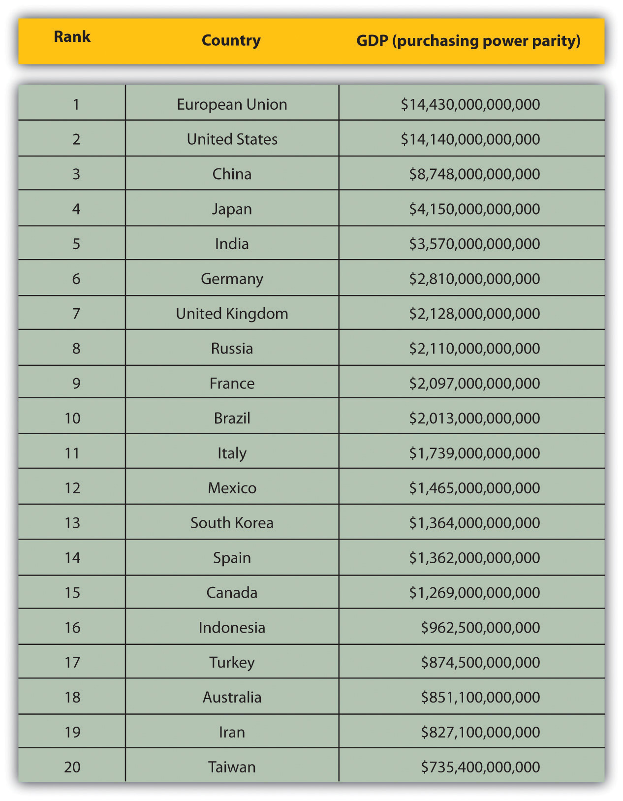
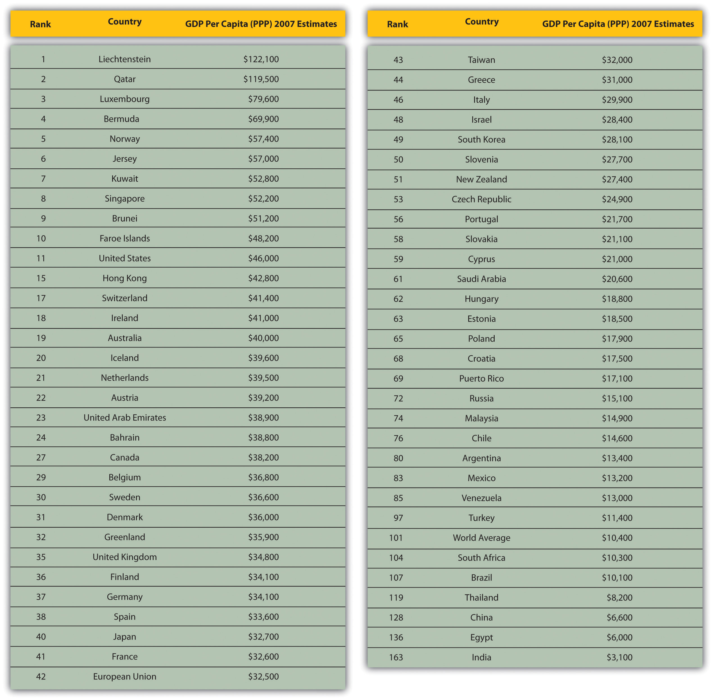
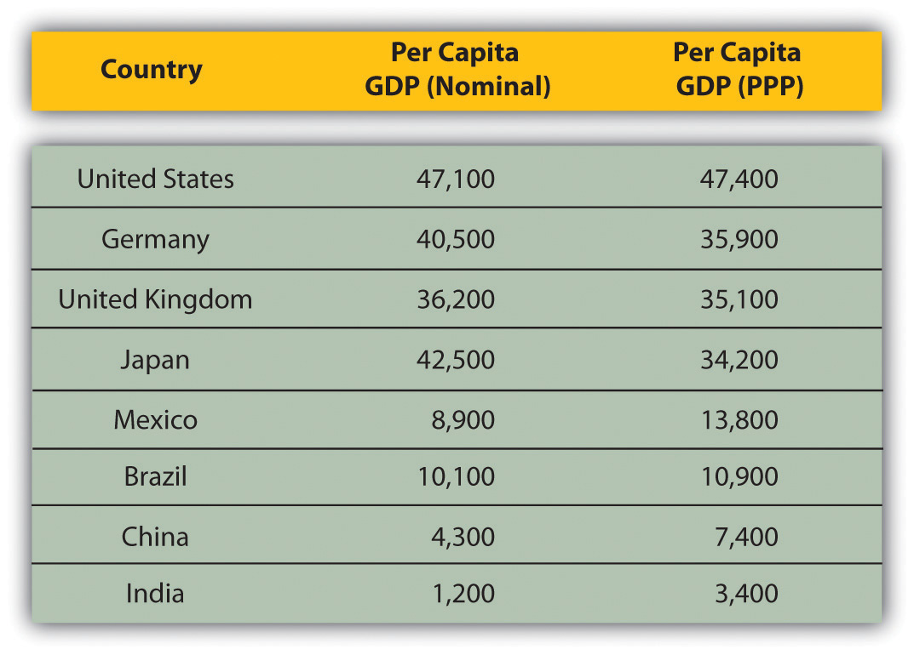

Experts debate exactly how to define the level of economic development of a country—which criteria to use and, therefore, which countries are truly developed. This debate crosses political, economic, and social arguments.
When evaluating a country, a manager is assessing the country’s income and the purchasing power of its people; the legal, regulatory, and commercial infrastructure, including communication, transportation, and energy; and the overall sophistication of the business environment.
Why does a country’s stage of development matter? Well, if you’re selling high-end luxury items, for example, you’ll want to focus on the per capita income of the local citizens. Can they afford a $1,000 designer handbag, a luxury car, or cutting-edge, high-tech gadgets? If so, how many people can afford these expensive items (i.e., how large is the domestic market)? For example, in January 2011, the Financial Times quotes Jim O’Neill, a leading business economist, who states, “South Africa currently accounts for 0.6 percent of world GDP. South Africa can be successful, but it won’t be big.”Jennifer Hughes, “‘Bric’ Creator Adds Newcomers to List,” Financial Times, January 16, 2010, accessed January 7, 2011, http://www.ft.com/cms/s/0/f717c8e8-21be-11e0-9e3b-00144feab49a.html#ixzz1MKbbO8ET. Section 4.4 "Emerging Markets" discusses the debate around the term emerging markets and which countries should be labeled as such. But clearly the size of the local market is an important key factor for businesspeople.
Even in developing countries, there are always wealthy people who want and can afford luxury items. But these consumers are just as likely to head to the developed world to make their purchase and have little concern about any duties or taxes they may have to pay when bringing the items back into their home country. This is one reason why companies pay special attention to understanding their global consumers as well as where and how these consumers purchase goods. Global managers also focus on understanding if a country’s target market is growing and by what rate. Countries like China and India caught the attention of global companies, because they had large populations that were eager for foreign goods and services but couldn’t afford them. As more people in each country acquired wealth, their buying appetites increased. The challenge is how to identify which consumers in which countries are likely to become new customers. Managers focus on globally standard statistics as one set of criteria to understand the stage of development of any country that they’re exploring for business.“Global Economies,” CultureQuest Global Business Multimedia Series (New York: Atma Global, 2010).
Let’s look more closely at some of these globally standard statistics and classifications that are commonly used to define the stage of a country’s development.
Gross domestic product (GDP)The value of all the goods and services produced by a country in a single year. is the value of all the goods and services produced by a country in a single year. Usually quoted in US dollars, the number is an official accounting of the country’s output of goods and services. For example, if a country has a large black, or underground, market for transactions, it will not be included in the official GDP. Emerging-market countries, such as India and Russia, historically have had large black-market transactions for varying reasons, which often meant their GDP was underestimated.
Figure 4.1
Source: US Central Intelligence Agency, “Country Comparison: GDP (PPP),” World Factbook, accessed June 3, 2011, https://www.cia.gov/library/publications/the-world-factbook/rankorder/2001rank.html.
Figure 4.1 shows the total size of the economy, but a company will want to know the income per person, which may be a better indicator of the strength of the local economy and the market opportunity for a new consumer product. GDP is often quoted on a per person basis. Per capita GDPThe value of the GDP divided by the population of the country. This is also referred to as the nominal per capita GDP. is simply the GDP divided by the population of the country.
The per capita GDP can be misleading because actual costs in each country differ. As a result, more managers rely on the GDP per personThe value of the GDP adjusted for purchasing power; helps managers understand how much income local residents have. adjusted for purchasing power to understand how much income local residents have. This number helps professionals evaluate what consumers in the local market can afford.
Companies selling expensive goods and services may be less interested in economies with low per capita GDP. Figure 4.2 "Per Capita GDP on a Purchasing Power Parity Basis" shows the income (GDP) on a per person basis. For space, the chart has been condensed by removing lower profile countries, but the ranks are valid. Surprisingly, some of the hottest emerging-market countries—China, India, Turkey, Brazil, South Africa, and Mexico—rank very low on the income per person charts. So, why are these markets so exciting? One reason might be that companies selling cheaper, daily-use items, such as soap, shampoos, and low-end cosmetics, have found success entering developing, but promising, markets.
Figure 4.2 Per Capita GDP on a Purchasing Power Parity Basis
Source: US Central Intelligence Agency, “Country Comparison: GDP—Per Capita (PPP),” World Factbook, accessed June 3, 2011, https://www.cia.gov/library/publications/the-world-factbook/rankorder/2004rank.html.
To compare production and income across countries, we need to look at more than just GDP. Economists seek to adjust this number to reflect the different costs of living in specific countries. Purchasing power parity (PPP)An economic theory that adjusts the exchange rate between countries to ensure that a good is purchased for the same price in the same currency. is, in essence, an economic theory that adjusts the exchange rate between countries to ensure that a good is purchased for the same price in the same currency. For example, a basic cup of coffee should cost the same in London as in New York.
A nation’s GDP at purchasing power parity (PPP) exchange rates is the sum value of all goods and services produced in the country valued at prices prevailing in the United States. This is the measure most economists prefer when looking at per-capita welfare and when comparing living conditions or use of resources across countries. The measure is difficult to compute, as a US dollar value has to be assigned to all goods and services in the country regardless of whether these goods and services have a direct equivalent in the United States (for example, the value of an ox-cart or non-US military equipment); as a result, PPP estimates for some countries are based on a small and sometimes different set of goods and services. In addition, many countries do not formally participate in the World Bank’s PPP project to calculate these measures, so the resulting GDP estimates for these countries may lack precision. For many developing countries, PPP-based GDP measures are multiples of the official exchange rate (OER) measure. The differences between the OER- and PPP-denominated GDP values for most of the wealthy industrialized countries are generally much smaller.US Central Intelligence Agency, “Country Comparison:GDP (PPP),” World Factbook, accessed January 3, 2011, https://www.cia.gov/library/publications/the-world-factbook/rankorder/2001rank.html.
In some countries, like Germany, the United Kingdom, or Japan, the cost of living is quite high and the per capita GDP (nominal) is higher than the GDP adjusted for purchasing power. Conversely, in countries like Mexico, Brazil, China, and India, the per capita GDP adjusted for purchasing power is higher than the nominal per capita GDP, implying that local consumers in each country can afford more with their incomes.
Figure 4.3 Per Capita GDP (Nominal) versus Per Capita GDP (PPP) of Select Countries (2010)
Sources: “List of Countries by GDP (Nominal) Per Capita,” Wikipedia, http://en.wikipedia.org/wiki/List_of_countries_by_GDP_(nominal)_per_capita. “Country Comparison: GDP—Per Capita (PPP),” US Central Intelligence Agency, https://www.cia.gov/library/publications/the-world-factbook/rankorder/2004rank.html.
GDP and purchasing power provide indications of a country’s level of economic development by using an income-focused statistic. However, in recent years, economists and business analysts have focused on indicators that measure whether people’s needs are satisfied and whether the needs are equally met across the local population. One such indication is the human development index (HDI)A summary composite index that measures a country’s average achievements in three basic aspects of human development: health, knowledge, and a decent standard of living., which measures people’s satisfaction in three key areas—long and healthy life in terms of life expectancy; access to quality education equally; and a decent, livable standard of living in the form of income.
Since 1990, the United Nations Development Program (UNDP) has produced an annual report listing the HDI for countries. The HDI is a summary composite index that measures a country’s average achievements in three basic aspects of human development: health, knowledge, and a decent standard of living. Health is measured by life expectancy at birth; knowledge is measured by a combination of the adult literacy rate and the combined primary, secondary, and tertiary gross enrollment ratio; and standard of living by (income as measured by) GDP per capita (PPP US$).UNDP, “Frequently Asked Questions (FAQs) about the Human Development Index (HDI): What Is the HDI?,” Human Development Reports, accessed May 15, 2011, http://hdr.undp.org/en/statistics/hdi.
While the HDI is not a complete indicator of a country’s level of development, it does help provide a more comprehensive picture than just looking at the GDP. The HDI, for example, does not reflect political participation or gender inequalities. The HDI and the other composite indices can only offer a broad proxy on some of the key the issues of human development, gender disparity, and human poverty.UNDP, “Is the HDI Enough to Measure a Country’s Level of Development?,” Human Development Reports, accessed May 15, 2011, http://hdr.undp.org/en/statistics/hdi. Table 4.1 "Human Development Index (HDI)—2010 Rankings" shows the rankings of the world’s countries for the HDI for 2010 rankings. Measures such as the HDI and its components allow global managers to more accurately gauge the local market.
Table 4.1 Human Development Index (HDI)—2010 Rankings
| Very High Human Development | High Human Development | Medium Human Development | Low Human Development |
|---|---|---|---|
| 1. Norway | 43. Bahamas | 86. Fiji | 128. Kenya |
| 2. Australia | 44. Lithuania | 87. Turkmenistan | 129. Bangladesh |
| 3. New Zealand | 45. Chile | 88. Dominican Republic | 130. Ghana |
| 4. United States | 46. Argentina | 89. China | 131. Cameroon |
| 5. Ireland | 47. Kuwait | 90. El Salvador | 132. Myanmar |
| 6. Liechtenstein | 48. Latvia | 91. Sri Lanka | 133. Yemen |
| 7. Netherlands | 49. Montenegro | 92. Thailand | 134. Benin |
| 8. Canada | 50. Romania | 93. Gabon | 135. Madagascar |
| 9. Sweden | 51. Croatia | 94. Suriname | 136. Mauritania |
| 10. Germany | 52. Uruguay | 95. Bolivia (Plurinational State of) | 137. Papua New Guinea |
| 11. Japan | 53. Libyan Arab Jamahiriya | 96. Paraguay | 138. Nepal |
| 12. Korea (Republic of) | 54. Panama | 97. The Philippines | 139. Togo |
| 13. Switzerland | 55. Saudi Arabia | 98. Botswana | 140. Comoros |
| 14. France | 56. Mexico | 99. Moldova (Republic of) | 141. Lesotho |
| 15. Israel | 57. Malaysia | 100. Mongolia | 142. Nigeria |
| 16. Finland | 58. Bulgaria | 101. Egypt | 143. Uganda |
| 17. Iceland | 59. Trinidad and Tobago | 102. Uzbekistan | 144. Senegal |
| 18. Belgium | 60. Serbia | 103. Micronesia (Federated States of) | 145. Haiti |
| 19. Denmark | 61. Belarus | 104. Guyana | 146. Angola |
| 20. Spain | 62. Costa Rica | 105. Namibia | 147. Djibouti |
| 21. Hong Kong, China (SAR) | 63. Peru | 106. Honduras | 148. Tanzania (United Republic of) |
| 22. Greece | 64. Albania | 107. Maldives | 149. Côte d'Ivoire |
| 23. Italy | 65. Russian Federation | 108. Indonesia | 150. Zambia |
| 24. Luxembourg | 66. Kazakhstan | 109. Kyrgyzstan | 151. Gambia |
| 25. Austria | 67. Azerbaijan | 110. South Africa | 152. Rwanda |
| 26. United Kingdom | 68. Bosnia and Herzegovina | 111. Syrian Arab Republic | 153. Malawi |
| 27. Singapore | 69. Ukraine | 112. Tajikistan | 154. Sudan |
| 28. Czech Republic | 70. Iran (Islamic Republic of) | 113. Vietnam | 155. Afghanistan |
| 29. Slovenia | 71. The former Yugoslav Republic of Macedonia | 114. Morocco | 156. Guinea |
| 30. Andorra | 72. Mauritius | 115. Nicaragua | 157. Ethiopia |
| 31. Slovakia | 73. Brazil | 116. Guatemala | 158. Sierra Leone |
| 32. United Arab Emirates | 74. Georgia | 117. Equatorial Guinea | 159. Central African Republic |
| 33. Malta | 75. Venezuela (Bolivarian Republic of) | 118. Cape Verde | 160. Mali |
| 34. Estonia | 76. Armenia | 119. India | 161. Burkina Faso |
| 35. Cyprus | 77. Ecuador | 120. Timor-Leste | 162. Liberia |
| 36. Hungary | 78. Belize | 121. Swaziland | 163. Chad |
| 37. Brunei Darussalam | 79. Colombia | 122. Lao People's Democratic Republic | 164. Guinea-Bissau |
| 38. Qatar | 80. Jamaica | 123. Solomon Islands | 165. Mozambique |
| 39. Bahrain | 81. Tunisia | 124. Cambodia | 166. Burundi |
| 40. Portugal | 82. Jordan | 125. Pakistan | 167. Niger |
| 41. Poland | 83. Turkey | 126. Congo | 168. Congo (Democratic Republic of the) |
| 42. Barbados |
84. Algeria 85. Tonga |
127. São Tomé and Príncipe | 169. Zimbabwe |
Source: UNDP, “Human Development Index (HDI)—2010 Rankings,” Human Development Reports, accessed January 6, 2011, http://hdr.undp.org/en/statistics.
In 1995, the UNDP introduced two new measures of human development that highlight the status of women in each society.
The first, gender-related development index (GDI), measures achievement in the same basic capabilities as the HDI does, but takes note of inequality in achievement between women and men. The methodology used imposes a penalty for inequality, such that the GDI falls when the achievement levels of both women and men in a country go down or when the disparity between their achievements increases. The greater the gender disparity in basic capabilities, the lower a country’s GDI compared with its HDI. The GDI is simply the HDI discounted, or adjusted downwards, for gender inequality.
The second measure, gender empowerment measure (GEM), is a measure of agency. It evaluates progress in advancing women’s standing in political and economic forums. It examines the extent to which women and men are able to actively participate in economic and political life and take part in decision making. While the GDI focuses on expansion of capabilities, the GEM is concerned with the use of those capabilities to take advantage of the opportunities of life.UNDP, “Measuring Inequality: Gender-related Development Index (GDI) and Gender Empowerment Measure (GEM),” Human Development Reports, accessed January 3, 2011, http://hdr.undp.org/en/statistics/indices/gdi_gem.
In 1997, UNDP added a further measure—the human poverty index (HPI)A composite index that uses indicators of the most basic dimensions of deprivation: a short life (i.e., longevity), lack of basic education (i.e., knowledge), and lack of access to public and private resources (i.e., decent standard of living)..
If human development is about enlarging choices, poverty means that opportunities and choices most basic to human development are denied. Thus a person is not free to lead a long, healthy, and creative life and is denied access to a decent standard of living, freedom, dignity, self-respect and the respect of others. From a human development perspective, poverty means more than the lack of what is necessary for material well-being.
For policy-makers, the poverty of choices and opportunities is often more relevant than the poverty of income. The poverty of choices focuses on the causes of poverty and leads directly to strategies of empowerment and other actions to enhance opportunities for everyone. Recognizing the poverty of choices and opportunities implies that poverty must be addressed in all its dimensions, not income alone.UNDP, “The Human Poverty Index (HPI),” Human Development Reports, accessed January 3, 2011, http://hdr.undp.org/en/statistics/indices/hpi.
Rather than measure poverty by income, the HPI is a composite index that uses indicators of the most basic dimensions of deprivation: a short life (longevity), a lack of basic education (knowledge), and a lack of access to public and private resources (decent standard of living). There are two different HPIs—one for developing countries (HPI-1) and another for a group of select high-income OECD (Organization for Economic and Development) countries (HPI-2), which better reflects the socioeconomic differences between the two groups. HPI-2 also includes a fourth indicator that measures social exclusion as represented by the rate of long-term unemployment.UNDP, “The Human Poverty Index (HPI),” Human Development Reports, accessed January 3, 2011, http://hdr.undp.org/en/statistics/indices/hpi.
So, the richest countries—like Liechtenstein, Qatar, and Luxembourg—may not always have big local markets or, in contrast, the poorest countries may have the largest local market as determined by the size of the local population. Savvy business managers need to compare and contrast a number of different classifications, statistics, and indicators before they can interpret the strength, depth, and extent of a local market opportunity for their particular industry and company.
The goal of this chapter is to review a sampling of countries in the developed, developing, and emerging markets to understand how economists and businesspeople perceive market opportunities. Of course, one chapter can’t do justice to all of these markets, but through select examples, you’ll see how countries have evolved in the post–World War II global economic, political, and social environments. Remember that the goal of any successful businessperson is to monitor the changing markets and spot opportunities and trends ahead of his or her peers.
The major classifications used by analysts are evolving. The primary criteria for determining the stage of development may change within a decade as demonstrated with the addition of the gender and poverty indices. In addition, with every global crisis or event, there’s a tendency to add more acronyms and statistics into the mix. Savvy global managers have to sort through these to determine what’s relevant to their industry and their business objectives in one or more countries. For example, in the fall of 2010, after two years of global financial crisis, global investors started using a new acronym to describe the changing economic fortunes among countries: HIICs, or heavily indebted industrialized countries. These countries include the United States, the United Kingdom, and Japan. “‘Developed markets are basically behaving like emerging markets,’ says HSBC’s Richard Yetsenga. ‘And emerging markets are quickly becoming more developed.’”Kelly Evans, “‘HIIC’ Nations Are Acting Like Backwaters,” Wall Street Journal, October 1, 2010, accessed January 3, 2011, http://online.wsj.com/article/SB10001424052748704789404575524402059410506.html. Investors are pulling money from the developed countries and into the BRIC countries (i.e., Brazil, Russia, India, and China), which are “‘where the population growth is, where the raw materials are, and where the economic growth is,’ says Michael Penn, global equity strategist at Bank of America Merrill Lynch.”Kelly Evans, “‘HIIC’ Nations Are Acting Like Backwaters,” Wall Street Journal, October 1, 2010, accessed January 3, 2011, http://online.wsj.com/article/SB10001424052748704789404575524402059410506.html. The key here is to understand that classifications—just like countries and international business—are constantly evolving.
Rather than being overwhelmed by the evolving data, it’s critical to understand why the changes are occurring, what attitudes and perceptions are shifting, and if they are supported by real, verifiable data. In the above example of HIICs, investors from the major economies are likely motivated by quick gains on stock prices and the prevailing perception that emerging markets offer companies the best growth prospects. But as a businessperson, the timeline for your company would be in years, not months; so it’s important to evaluate information based on your company’s goals rather than relying on the media, investment markets, or other singularly focused industry professionals.
To truly monitor the global business arena and select prospective countries, you need to follow the news, trends, and available information for a period of time. Over time, savvy global managers develop a geographic, industrial, or product expertise—or some combination. Those who become experts on a specific country spend a great deal of time in the country, sometimes learn the language, and almost always develop an understanding of the country’s political, economic, and social history as well as its culture and evolution. They gain a deeper knowledge of more than just the country’s current business environment. In the business world, these folks are affectionately called “old hands”—as in he is an “old China hand” or an “old Indonesia hand.” This is a reflection of how seasoned or experienced a person is with a country.
(AACSB: Reflective Thinking, Analytical Skills)